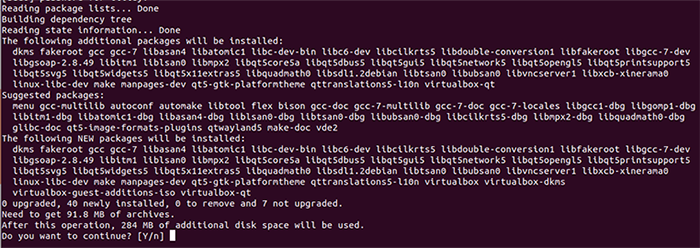
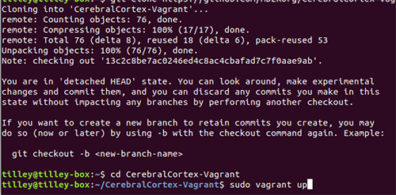
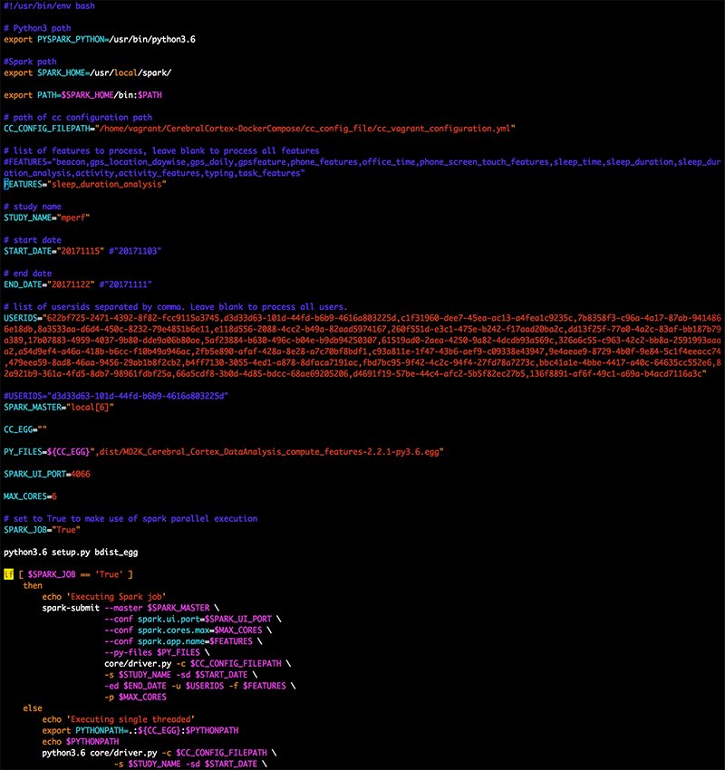

Cerebral Cortex for MIT Lincoln Lab
Developers and engineers can use these instructions along with this repository to assist in installing and testing Cerebral Cortex, the cloud component of MD2K's software platform.
Contents
• Installing Cerebral Cortex
• Starting and Stopping Cerebral Cortex
• Cloning Repository
• Updating Variables
• Running Marker Computation
System Requirements:
To install Cerebral Cortex, we recommend you use an Intel Quad Core i7 processor (or better) with at least 32GB RAM.Installing Cerebral Cortex (from source)
First, install dependencies:
$ sudo apt install virtualbox virtualbox-dkms virtualbox-guest-additions-isoWhen prompted to continue, type Y to begin the installation:

When progress reaches 100%, you should see a message confirming that installation is complete.
Next, you will need to download and install Vagrant:
$ wget https://releases.hashicorp.com/vagrant/2.0.1/vagrant_2.0.1_x86_64.deb
Once the download is complete, type the command below to unpack and complete the Vagrant installation:
$ sudo dpkg -i vagrant_2.0.1_x86_64.debNext, use the following command to install the docker-compose plugin for Vagrant:
$ vagrant plugin install vagrant-docker-compose
Then you will need to clone the repository. You must be running Vagrant as a superuser to ensure the ports are forwarded properly. (Note: Be sure you are using the latest version number of CerebralCortex-Vagrant (ie, 2.2.1). To confirm this, find the latest version number here.)
$ git clone https://github.com/MD2Korg/CerebralCortex-Vagrant -b 2.2.1
Next, launch Cerebral Cortex using the following commands:
$ cd CerebralCortex-Vagrant
$ sudo vagrant up
The system will download and install all packages. This may take some time.
Once the process is complete, type the following command to test that the system is online:
$ wget http://localhost/api/v1/auth/
You should see a Username/Password Authentication Failed response, as shown below. This message confirms that Cerebral Cortex is installed and the system is online. Note: If you do not see this response, you may try stopping Cerebral Cortex using the command in the next section of these instructions, then restarting it to try again.
--2017-12-21 21:14:20-- http://localhost/api/v1/auth/
Resolving localhost (localhost)... 127.0.0.1
Connecting to localhost (localhost)|127.0.0.1|:80... connected.
HTTP request sent, awaiting response... 401 UNAUTHORIZED
Username/Password Authentication Failed.
Starting and Stopping Cerebral Cortex
To start Cerebral Cortex:
$ sudo vagrant up
To stop Cerebral Cortex:
$ sudo vagrant halt
To suspend Cerebral Cortex:
$ sudo vagrant suspend
To remotely access Cerebral Cortex's console:
$ sudo vagrant sshTo explore and interact with Cerebral Cortex's containers, use Docker-Compose commands (ie,docker-compose psas shown below):
Last login: Fri Dec 22 03:01:17 2017 from 10.0.2.2
[vagrant@cerebralcortex ~]$ cd CerebralCortex-DockerCompose/
[vagrant@cerebralcortex CerebralCortex-DockerCompose]$ docker-compose ps
Name Command State Ports
---------------------------------------------------------------------------------------------------------------------------------------
md2k-api-server /entrypoint.sh /start.sh Up 443/tcp, 80/tcp
md2k-cassandra /bootstrap.sh cassandra -f Up 7000/tcp, 7001/tcp, 7199/tcp, 0.0.0.0:9042->9042/tcp, 0.0.0.0:9160->9160/tcp
md2k-grafana /run.sh Up 0.0.0.0:3000->3000/tcp
md2k-influxdb /entrypoint.sh influxd Up 0.0.0.0:8086->8086/tcp
md2k-jupyterhub jupyterhub --no-ssl --conf ... Up
md2k-kafka start-kafka.sh Up 0.0.0.0:9092->9092/tcp
md2k-minio /usr/bin/docker-entrypoint ... Up 0.0.0.0:9000->9000/tcp
md2k-mysql docker-entrypoint.sh mysqld Up 0.0.0.0:3306->3306/tcp
md2k-nginx nginx -g daemon off; Up 0.0.0.0:443->443/tcp, 0.0.0.0:80->80/tcp
md2k-zookeeper /bin/sh -c /usr/sbin/sshd ... Up 0.0.0.0:2181->2181/tcp, 22/tcp, 2888/tcp, 3888/tcp
Cloning Repository
Next, you will need to clone the data analysis repository. Begin by starting Cerebral Cortex and gaining remote access:
$ sudo vagrant up$ sudo vagrant ssh
Then use the following command to clone the data analysis repository:
$ git clone https://github.com/MD2Korg/CerebralCortex-DataAnalysis.gitUpdating Variables
Once the repository has been cloned, you will need to update the script file compute_features.sh to match your local enivronment. The file is found in the root folder of the repository. Note: The variables CC_CONFIG_FILEPATH and CC_EGG must be accessible on all machines in the cluster.

Running Marker Computation
Once you have successfully cloned the repository and updated the appropriate variables, you are ready to run the marker computation. Please run the script to begin this process. Note: This will take some time to complete.
$ ./compute_features.sh